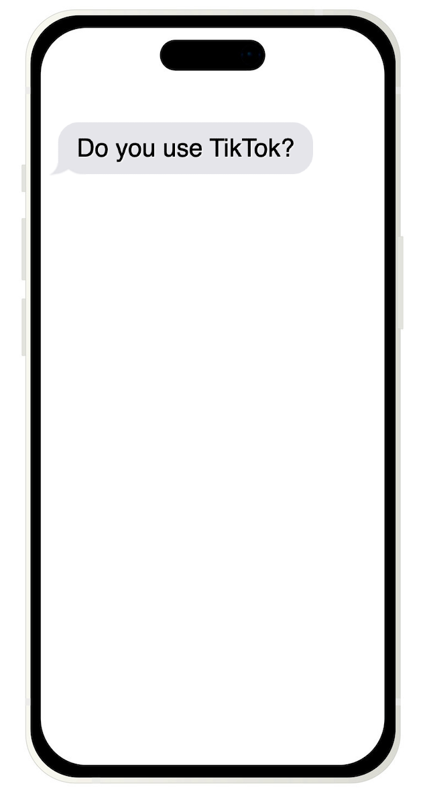

From Tiktok Trends to Playlist Picks
Exploring Musical Trends Across Spotify and TikTok

What is  ?
?
TikTok is a social media platform that has taken the world by storm.
Users can create, share, and discover short videos to distribute to others around the globe.
TikTokers express themselves through videos featuring lip-syncing, comedy skits, and dancing to soundtracks.
Its algorithm tailors the content to each users' preferences, contributing to its trendsetting nature.
@charlidamelio @dixiedamelio @marcdamelio @heididamelio dc @africanhoney ♬ original sound - Samantha Long
@bellapoarch To the 🐝 🐝 🐝 #fyp ♬ M to the B - Millie B
@juanpazurita Día 62. Ya estoy bailando en tiktok @paumtzurita @andymtzurita ♬ Blinding Lights - The Weeknd

Explore the artists who dominated the TikTok and Spotify charts in 2022.
Hover over a bubble to learn more information about an artist.
Select a button to filter the artists.
Search for your favorite artist!
In 2022, the top music charts on Spotify and TikTok featured over 400 musical artists.
The bubble chart showed that about 30% of these artists secured top-ranking songs on both platforms.
Further, each chart was mostly dominated by one-hit-wonders – artists who left their mark with just a single impactful release.
But among the many chart-topping artists and plentiful one-hit-wonders, a few truly stood out.
Who were these top artists that grabbed everyone's attention on Spotify and TikTok?
Let's take a closer look at the top artists on both platforms!
Both platforms have a unique way of ranking top artists.
On TikTok, artists were ranked based on the duration of time their tracks spent on the top charts.
Artists on Spotify were ranked by Spotify's unique artist popularity metric – it's measured by their number of streams.
These artists hold the highest ranking across both platforms, showcasing their widespread influence in the music industry.
Hover over an artist to view their top tracks!
Now that we have explored the top artists that were featured on 2022's top charts,
it's time to dive deeper into the songs themselves.
Explore the distribution of attributes across both platforms.
Select a trait from the list of buttons to see the distribution of all songs across the scale of this trait.
The feature to dive into:
Investigate the possible relationships between attributes.
Select an attribute from the list of buttons for the X
axis and another for the Y axis
to
examine the relationship between the two traits
of all the songs on TikTok and Spotify.
Hover over a spot to see the details of the song.
X Axis
Y Axis
How do the Top Songs Overlap?
Every song has a unique fingerprint, as shown in the radar charts. Different values for different attributes allow us to see which types of songs make it into the top charts for Spotify vs TikTok.
Top Songs on Spotify Chart:
Top Songs on Tiktok Chart:
Playing with the Distribution of Keys Among Top Songs
In music theory, the key of a song is its central pitch. There are 12 keys that a song can be recorded in.
Each key represent 1 of the 12 pitches within an octave.
Try investigating the 12 key distribution of the top songs on Spotify and TikTok in 2022 by playing the piano!
From the statistics we can see that for songs on both Tiktok and Spotify, songs that are the most popular
tend to have high energy, medium to high danceability, low acousticness, low liveness and low speechiness.
These traits indicate that a typical popular song would be fast, easy to dance with, composed with
electronic instruments rather than acoustic instruments; studio-recorded and produced rather than on a live
performance, and consists of music rather than pure spoken words.
In addition, these traits of popular songs are consistent on both Tiktok and Spotify.
Sources
Datasets Used:
TikTok's Popular Songs from 2022Spotify's Popular Songs from 2022
TikTok Global Downloads
Article Sources:
3 Billion Downloads on TikTokSpotify Track's Audio Features
TikTok's Influence on Music Industry
Visualization Resources:
Bubble Chart Reference Code Bubble Chart Simulation Reference CodeFade-in Text
Piano Sounds 1 Piano Sounds 2
Radar Plot Reference Code
Spotify Track Embeds TikTok Video Embeds